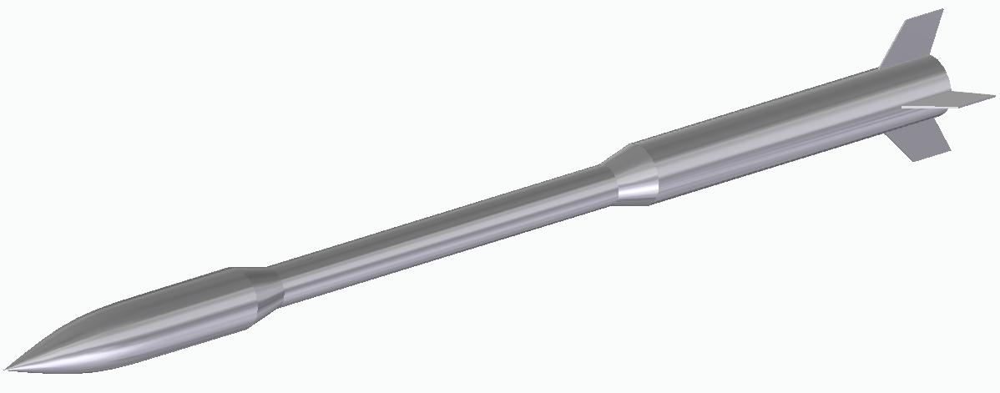
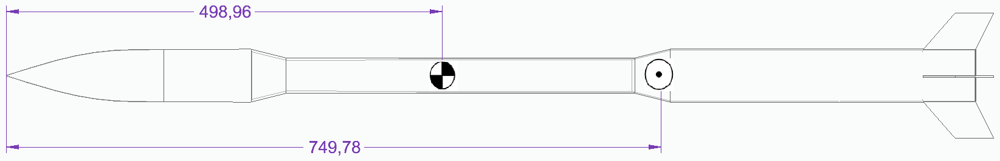
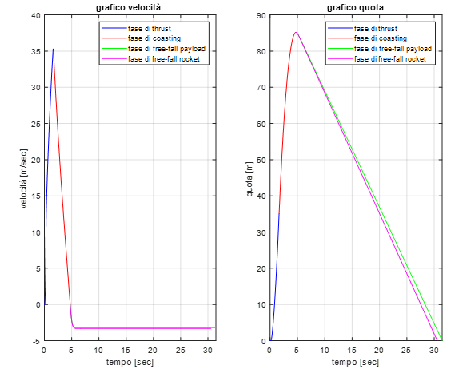
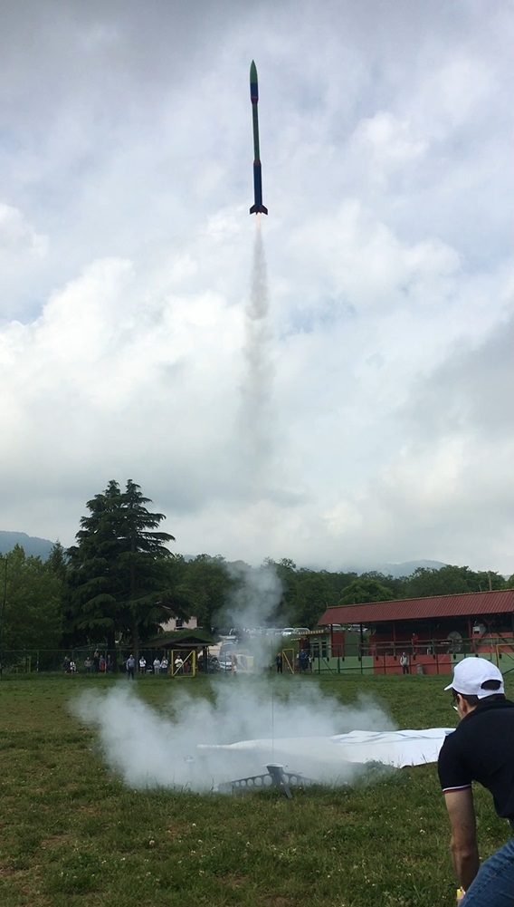
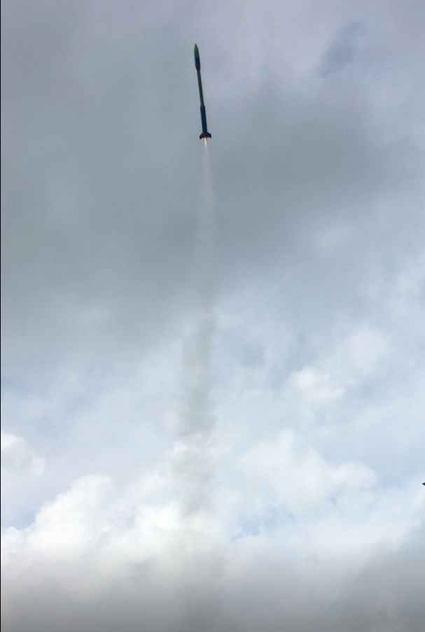
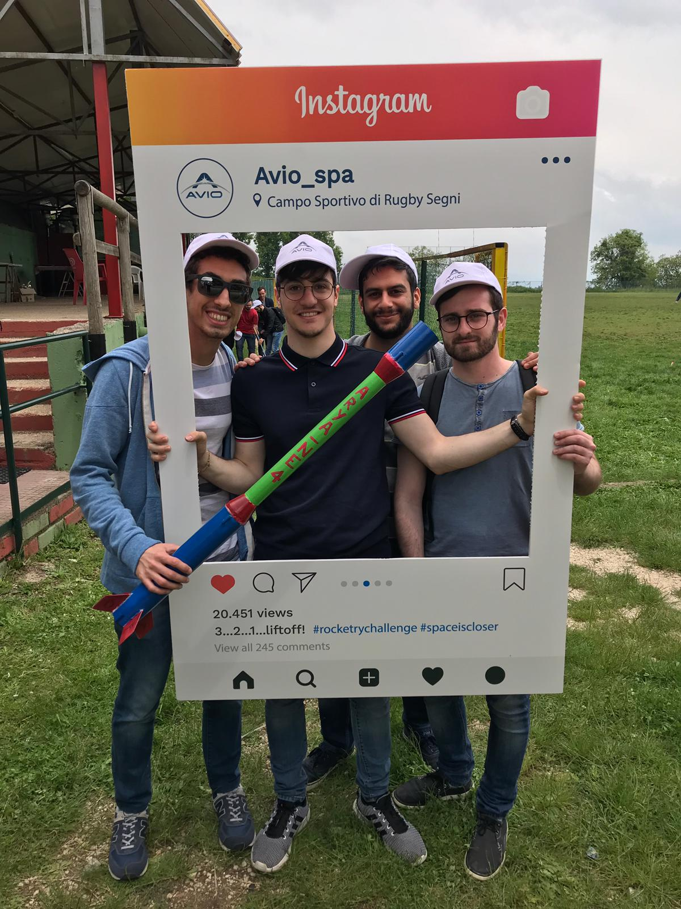

Back to ProjectsTorna a Progetti
Sapienza Rocketry Challenge
Space Propulsion Laboratory, Sapienza University of Rome, February to May 2019
Laboratorio di Propulsione Spaziale, Sapienza Università di Roma, da febbraio a maggio 2019
In the Space Propulsion Laboratory course, run with AVIO, our team of four designed, simulated, built and launched a model rocket with a commercial solid motor. The rocket had to carry a raw egg and a flight recorder, bring them back intact, and land the payload as close as possible to the flight time we had predicted.
Nel corso di Laboratorio di Propulsione Spaziale, organizzato con AVIO, il nostro team di quattro persone ha progettato, simulato, costruito e lanciato un modello di razzo con motore commerciale a propellente solido. Il razzo doveva portare un uovo crudo e un registratore di volo, riportarli a terra intatti e far atterrare il payload il più vicino possibile al tempo di volo previsto.
- 85 mpredicted apogeeapogeo previsto
- 31.5 spredicted payload flight timetempo di volo previsto del payload
- 4.2stability margin (calibres)margine di stabilità (calibri)
- 317.5 glift-off massmassa al decollo
MissionMissione
- Carry a 60 g egg and a 30 g flight recorder (altimeter and battery) to an altitude between 50 and 130 m.
- Recover payload and rocket separately, each under its own parachute.
- Payload descent rate between 2.5 and 4 m/s, rocket descent rate below 8 m/s.
- Only the motors provided by the organisers, with no staging or clustering.
- Predict the flight time of the payload, from launch to landing, as accurately as possible.
- Portare un uovo da 60 g e un registratore di volo da 30 g (altimetro e batteria) a una quota tra 50 e 130 m.
- Recuperare payload e razzo separatamente, ciascuno con il proprio paracadute.
- Velocità di discesa del payload tra 2,5 e 4 m/s, del razzo sotto 8 m/s.
- Solo i motori forniti dagli organizzatori, senza stadi né motori in parallelo.
- Prevedere il più accuratamente possibile il tempo di volo del payload, dal lancio all'atterraggio.
Feasibility studyStudio di fattibilità
In the Preliminary Design Review we compared the five motors allowed by the organisers (Estes C6, C11 and D12, Weco D7, Klima D9). For each one we computed altitude performance charts, apogee and coasting time as a function of lift-off mass and drag, and checked them against the altitude limits and the motor ejection delay. We then defined a nominal configuration for a light and a heavy egg and studied best and worst cases. The class C motors met the requirements only with very light rockets and were very sensitive to uncertainties, while the class D motors gave the smallest spread in the flight data and were the most suitable for the mission.
Nella Preliminary Design Review abbiamo confrontato i cinque motori ammessi dagli organizzatori (Estes C6, C11 e D12, Weco D7, Klima D9). Per ognuno abbiamo calcolato le altitude performance charts, apogeo e tempo di coasting in funzione della massa al decollo e della resistenza, e le abbiamo confrontate con i limiti di quota e con il ritardo di espulsione del motore. Abbiamo poi definito una configurazione nominale per un uovo leggero e uno pesante e studiato i casi migliore e peggiore. I motori di classe C rispettavano i requisiti solo con razzi molto leggeri ed erano molto sensibili alle incertezze, mentre quelli di classe D davano la dispersione minore dei dati di volo ed erano i più adatti alla missione.
DesignProgetto
The final design, presented in the Critical Design Review, uses an Estes D12-3 motor (16.8 N·s total impulse, 1.65 s burn, 3 s ejection delay). The rocket is about 1.1 m long: a 60 mm aft section with four fins, a slimmer 40 mm central section joined by two transitions, and a 60 mm forward section with the nose cone, which holds the egg and the flight recorder.
Il progetto finale, presentato nella Critical Design Review, usa un motore Estes D12-3 (impulso totale 16,8 N·s, combustione di 1,65 s, ritardo di espulsione di 3 s). Il razzo è lungo circa 1,1 m: una sezione posteriore da 60 mm con quattro alette, una sezione centrale più sottile da 40 mm collegata da due raccordi, e una sezione anteriore da 60 mm con l'ogiva, che contiene l'uovo e il registratore di volo.
We estimated the centre of gravity from the mass of each component and the centre of pressure with the Barrowman method. With the centre of gravity at 499 mm and the centre of pressure at 750 mm from the tip, the stability margin is 4.2 calibres, inside the target range of 3 to 5. Even if the two transitions gave no stabilising contribution, the margin would still be 2.2.
Abbiamo stimato il baricentro dalla massa di ogni componente e il centro di pressione con il metodo di Barrowman. Con il baricentro a 499 mm e il centro di pressione a 750 mm dalla punta, il margine di stabilità è di 4,2 calibri, dentro l'intervallo obiettivo tra 3 e 5. Anche se i due raccordi non dessero alcun contributo stabilizzante, il margine sarebbe comunque 2,2.


Flight simulationSimulazione del volo
We wrote a MATLAB simulation of the vertical flight in three phases. The powered phase, with the thrust curve from the manufacturer and a decreasing mass, was integrated numerically with the explicit Euler method; coasting to apogee and the descent of payload and rocket under their parachutes were solved analytically. We then repeated the simulation for best and worst values of mass, total impulse, drag and air density, and for launch angles between 60° and 90°.
Abbiamo scritto una simulazione in MATLAB del volo verticale in tre fasi. La fase propulsa, con la curva di spinta del costruttore e la massa variabile, è stata integrata numericamente con il metodo di Eulero esplicito; il coasting fino all'apogeo e la discesa di payload e razzo con i rispettivi paracadute sono stati risolti analiticamente. Abbiamo poi ripetuto la simulazione per i valori migliori e peggiori di massa, impulso totale, resistenza e densità dell'aria, e per angoli di rampa tra 60° e 90°.
- Apogee: 85 ± 7 m
- Coasting time: 3.08 ± 0.19 s, close to the 3 s ejection delay of the motor
- Payload descent rate: 3.2 m/s
- Payload flight time: 31.5 ± 1.3 s
- With a 60° launch angle the apogee would drop to 52 m, still above the minimum; up to 85° the effect is negligible.
- Apogeo: 85 ± 7 m
- Tempo di coasting: 3,08 ± 0,19 s, vicino al ritardo di espulsione di 3 s del motore
- Velocità di discesa del payload: 3,2 m/s
- Tempo di volo del payload: 31,5 ± 1,3 s
- Con un angolo di rampa di 60° l'apogeo scenderebbe a 52 m, comunque sopra il minimo; fino a 85° l'effetto è trascurabile.

LaunchLancio
After building the rocket and passing the structural and stability checks, we launched it at the final event of the course on 25 May 2019, at the rugby field in Segni, near Rome. The day included the project presentations, the launches, and the comparison between the recorded telemetry and each team's flight predictions.
Dopo la costruzione del razzo e le prove strutturali e di stabilità, lo abbiamo lanciato all'evento finale del corso, il 25 maggio 2019, al campo da rugby di Segni, vicino a Roma. La giornata comprendeva la presentazione dei progetti, i lanci e il confronto tra la telemetria registrata e le previsioni di volo di ogni team.


Team
Francesco Mazzei, Daniel Odeven, Marco Pustorino, Alessandro Vittor

ReportsReport
Critical Design Review (PDF, in Italian)Critical Design Review (PDF) Preliminary Design Review (PDF, in Italian)Preliminary Design Review (PDF)